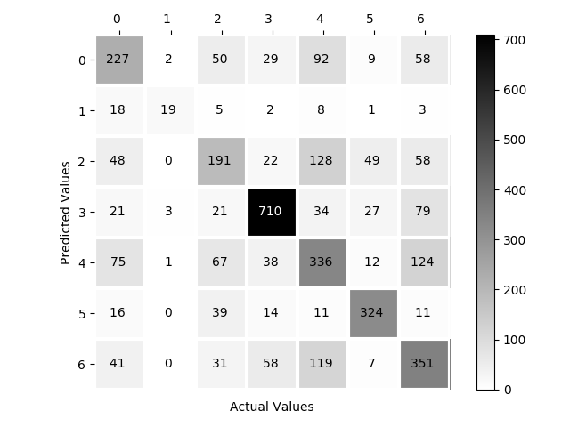
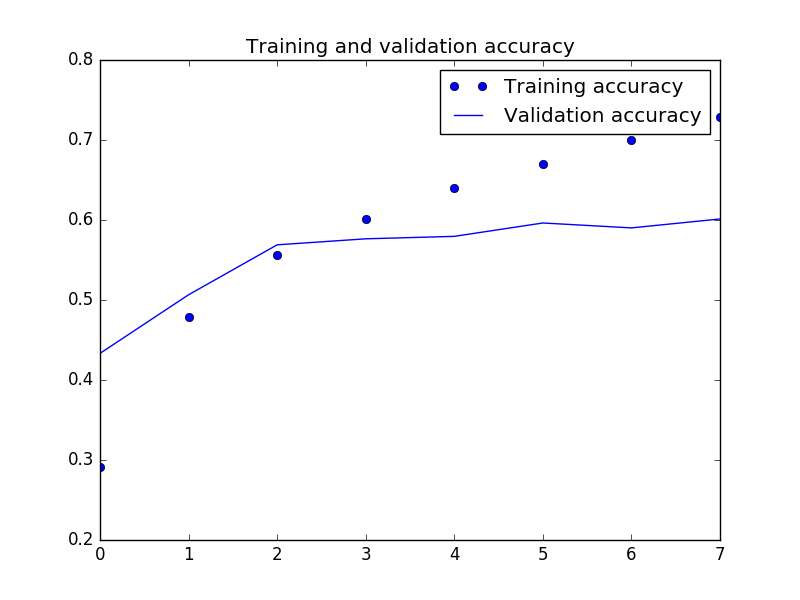

The question
Can a convolutional neural network classify facial expressions in real time from a webcam image?
Computer vision · Deep learning
A real-time facial expression recognition project trained on FER2013. Explore the original research and try the model with your camera.
By Isha Talegaonkar 2019
01 / Interactive demo
Center one face inside the guide. Predictions stay in your browser.
Camera access requires permission. A photo works too. Images are processed locally and are not uploaded.
A research demonstration, not a reliable measure of a person's feelings. Lighting, pose, and context affect predictions.
Model will load when you start the demo.
02 / Behind the project
A computer vision study of seven facial expression categories.
Can a convolutional neural network classify facial expressions in real time from a webcam image?
Detect and crop a face, convert it to a 48 × 48 grayscale image, then classify it with a CNN trained on FER2013.
Probabilities across angry, disgust, fear, happy, sad, surprise, and neutral. The strongest class is shown above.
03 / What we found
Figures from the original project dashboard.

